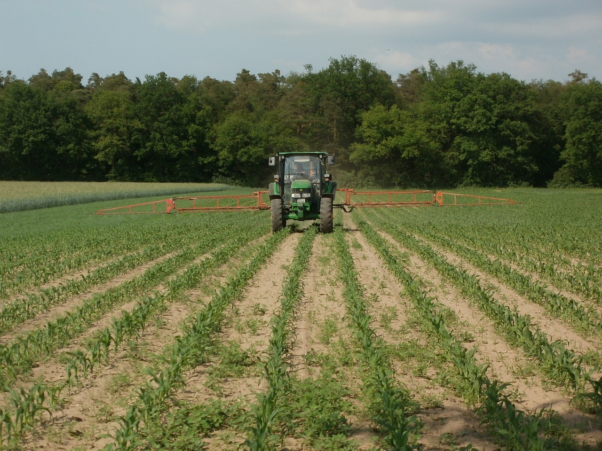
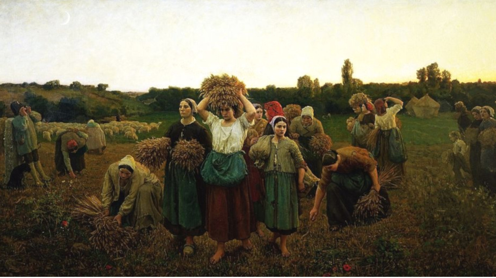

Sobre o Agrinho

A Vida no Campo
As manhãs no campo trazem consigo a melodia suave dos passáros e o frescor da brisa matinal.
Enquanto o sol nasce sobre os campos verdejantes, os agricultores iniciam suas tarefas com dedicação e gratidão.
Cada semente plantada é um ato de esperança, e cada colheita é uma celebração da generosidade da terra.
No campo,a simplicidade se traduz em momentos de paz e conexão com a natureza,onde o tempo parece desacelerar,permitindo que a vida seja apreciada em sua forma mais pura.
Desafios

Agricultura no Campo
No campo,a agricultura é o pulsar da vida. Sob o céu aberto,agricultores dedicados cultivam a terra com paciência e sabedoria.
Cada sulco aberto na terra representa a promessa de uma colheita abundante, fruto do trabalho árduo e da conexão íntima com a natureza.Nas fazendas rurais,a agricultura não é apenas uma atividade, mas sim um modo de vida, de honrar as tradições e respeita os ciclos naturais.
É nesse ambiente que a magia da agricultura se revela, alimentando não apenas corpos, mas também espíritos, e mantendo viva a essência da vida do campo.
Contribuição

Dificuldades de viver no Campo
Viver no campo apresenta desafios singulares que demandam adaptalidade e resiliência. O isolmento geográfico pode limitar o acesso a serviços essenciais, enquanto a distância ampliam as dificudades de deslocamento.
Além disso, a escassez de oportunidades de emprego e educação pode representar obstáculos significativos para os residentes rurais.
As condições climáticas imprevisíveis também influenciam diretamente a subsistência no campo, exigindo planejamento e preparo para lidar com as variações naturais.
No entanto, é importante ressaltar que a vida no campo também oferece uma conexão íntima com a natureza e um senso de comunidade forte, que muitas vezes compensam essas dificuldades.
Relogio do kkk
Tempo restante kkk
7
dias
7
horas
7
min
7
seg